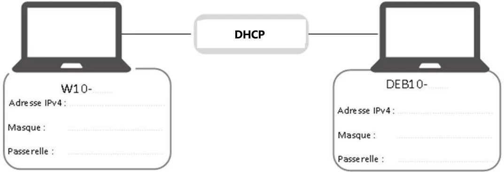
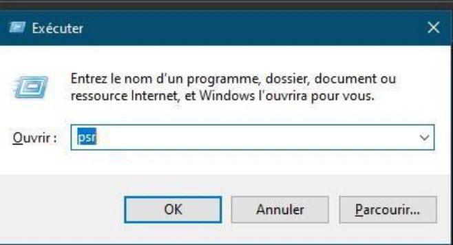
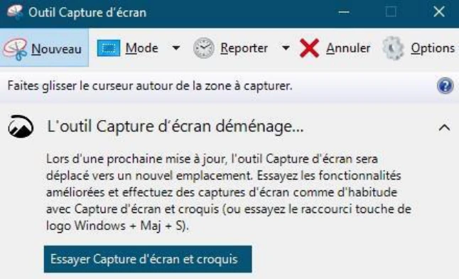
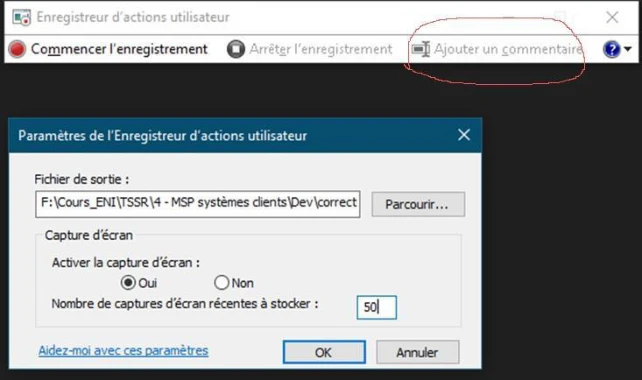

Énoncé — MSP Systèmes clients¶
La transcription du support Drive et l’aide pédagogique sont séparées pour rendre leur provenance explicite.
SOURCE DRIVE · TRANSCRIPTION DU SUPPORT
Le contenu des documents du dossier TSSR est transcrit ci-dessous, page par page. Les textes et tableaux sont intégrés à la page Web. Aucun fichier PDF, aucune diapositive entière ni aucune reproduction de page n’est affiché. Seuls des croquis ou visuels isolés et vérifiés peuvent accompagner la transcription. Les versions et les consignes restent celles des supports de formation. Les compléments IA sont conservés dans leur onglet distinct.
Énoncé · Enoncé MSP - Systèmes clients · 14 pages transcrites
Les valeurs d’accès présentes dans les documents sont neutralisées par « fourni par le formateur ». Les adresses personnelles utilisent le domaine example.com. Le rôle des champs et la structure des exemples sont conservés ; aucun fichier source du Drive n’a été modifié.
Mise en situation professionnelle : systèmes clients
Avant de démarrer ce TP, il convient d’avoir suivi les cours « Office 365 – Outils », « Bases des réseaux », « Systèmes clients Microsoft », « Utilisation d'une distribution GNU/Linux » et « Administration d'une distribution GNU/Linux ».
Durée estimée
4 jours et 3.5 heures
Sommaire
- Partie 1 – Installation des systèmes
- 1.1 Présentation
- 1.2 Caractéristiques matérielles des machines virtuelles
- 1.3 Tâches à réaliser
- Partie 2 – Configuration des utilisateurs et de l’environnement
- 2.1 Création d’utilisateurs et de groupes
- 2.2 Configuration de l’environnement de travail
- Partie 3 – Configuration du stockage et des ressources
- 3.1 Partitionnement de disques
- 3.2 Occupation des espaces disques
- 3.3 Création de partages réseau
- 3.4 Gestion d’imprimantes
- Partie 4 – Configuration avancée des systèmes
- 4.1 Configuration avancée système Debian
- 4.2 Configuration avancée système Windows 10
- Partie 5 – Installation d’applications
- 5.1 Installation d’application sur le Windows 10
- 5.2 Installation d’application sur le poste Debian 10
- Partie 6 – Sauvegarde et restauration
- 6.1 Sauvegarde sur le poste Debian 10
Sommaire (suite)
- 6.2 Sauvegarde sur les postes Windows 10
- Partie 7 – Pour aller plus loin – Partitionnement LVM
- 7.1 Configuration du stockage et des ressources
- 7.2 Configuration avancée des systèmes
Énoncé
Partie 1 – Installation des systèmes
1.1 Présentation
L’objectif de cette mise en situation professionnelle est d’installer et configurer progressivement deux systèmes d’exploitation : Microsoft Windows 10 et Debian 10.
DHCP
- Vous installerez 2 systèmes clients à l’aide de l’outil de virtualisation VMware Workstation en respectant les caractéristiques spécifiques qui vous seront fournies plus tard.
- Certaines tâches demandées nécessiteront de travailler avec 4 machines virtuelles fournies (les vôtres et celle de votre binôme)


Vous prendrez soin de créer des procédures relatant toutes vos actions. Ces procédures sont d'abord pour vous ! Insérez donc le niveau de détail qui vous parait adéquat !
(une procédure non détaillée pour la création de la VM avec WorkStation car je sais parfaitement m'y prendre maintenant ... ou bien une procédure détaillée, pas à pas, avec screenshots, pour l'installation de Debian, histoire d'en garder une belle trace pour les prochains cours, parce que Linux, ça n'est pas encore bien maitrisé).
Elles sont indispensables pour un futur technicien supérieur en système et réseau ! En effet, vous pourrez réutiliser ces procédures pour :
- Vos révisions
- Vos prochains ateliers, MSP
- Vos tâches en stage, en entreprise
- Le support aux utilisateurs
- L'échange avec vos collègues de bureau
- ...
Pour cela, créez un document (avec des styles, des titres, un sommaire surtout ...) que vous stockerez dans les fichiers partagés avec votre coach (au travers de votre conversation privée TEAMS par exemple). Votre coach pourra vous guider sur cette procédure et suivre votre progression pour mieux vous aider, vous dépanner et vous permettre de comprendre et d'avancer.
Vous pouvez éventuellement vous aider de l'outil natif psr pour enrichir votre document procédure avec des screenshots
Créez votre procédure automatique Lancer l'outil PSR (step recorder) avec la touche Windows+R. Puis dans la zone exécuter tapez psr
- Créer un dossier consacré à toutes vos captures
- Choisissez le nombre de captures d'écran à conserver (par exemple 200)
- Cliquez sur démarrer l’enregistrement.
Il est possible d'insérer des commentaires lors de votre manipulation
- Cliquez sur stop record une fois votre manipulation terminée
- Vous n'avez plus qu'à ouvrir, décompresser, vérifier et stocker votre capture. Un copier-coller d'un screenshot dans votre procédure et le tour est joué
Grâce aux outils PSR et Capture écran, vous pourrez rapidement réaliser des procédures.
Paramétrer le nombre de captures à 200 minimum pour avoir suffisamment de ressources.






1.2 Caractéristiques matérielles des machines virtuelles
Poste Client Windows
Nom : W10-VosInitiales. Système d’exploitation : Windows 10 Professionnel.
| Prérequis matériels | Valeur |
|---|---|
| CPU et mémoire | Allouer les ressources en suivant les recommandations Microsoft |
| Disque dur | 1 disque dur de 32 Go ; 1 disque dur additionnel de 40 Go |
| Réseau | 1 interface réseau en « Bridged » |
Poste Client Linux
Nom : DEB10-VosInitiales. Système : Debian 10.
| Prérequis matériels | Valeur |
|---|---|
| CPU | 1 vCPU |
| Mémoire | 2048 Mo |
| Disque dur | 1 disque dur de 20 Go ; 1 disque dur additionnel de 40 Go |
| Réseau | 1 interface réseau en « Bridged » |
1.3 Tâches à réaliser
✓ Schéma et tableau récapitulatif
- Votre première tâche sera, en utilisant l’illustration précédemment indiquée, de reproduire le schéma et d’y faire figurer toutes les informations liées à l’adressage IP. Vous vous servirez pour cela de tout moyen à votre convenance (www.draw.io, MS Visio, Word ou Paint...).
• Vous produirez également un tableau récapitulant l’ensemble des informations relatives aux configurations des systèmes (login/mots de passe, noms, adresses IP, processeurs, mémoire...).
✓ Installation des systèmes
- Sur le poste Microsoft sera déployé le système d’exploitation Windows 10 Edition Professionnelle sur le 1er disque dur. Vous configurerez le système en respectant les critères précédemment évoqués (nommage, adressage IP...). Vous empêcherez en outre, le service Windows Update, de se connecter aux serveurs Microsoft. Vous trouverez l’iso d’installation disponible ici (récupérez la plus récente) :
\\10.0.0.6\Distrib\iso\os\windows\10
- Quant au Client Debian, en plus des informations déjà mentionnées, vous installerez le système depuis l’image ISO « DVD » de la distribution Debian en version 10.x avec un environnement graphique. Vous trouverez l’iso d’installation ici : \\10.0.0.6\Distrib\iso\os\unix-linux\linux\Debian\debian10Buster
- Vous partitionnerez le disque manuellement selon le schéma suivant en prenant garde de pouvoir exploiter ultérieurement l’espace non alloué et vous conserverez le système de fichiers par défaut des différents points de montage :
| Point de montage | Taille |
|---|---|
| / | 17 Go |
| /boot | 512 Mo |
| swap | 256 Mo |
| /home | 1 Go |
- Vous laisserez cocher les paquets par défaut et sélectionnerez comme source d’installation le serveur de dépôt français de la liste (ftp.fr.debian.org)
✓ Tester la connectivité réseau
- Assurez-vous de la connectivité :
- Entre vos systèmes
- Avec les machines de votre binôme
Partie 2 – Configuration des utilisateurs et de l’environnement
2.1 Création d’utilisateurs et de groupes
✓ Liste des membres du personnel
• La société comporte 9 employés répartis en 5 services comme indiqué ci-dessous :
| Services | Membres |
|---|---|
| Direction | Rick Grimes |
| Commercial | Daryl Dixon Gabriel Stokes Maggie Greene |
| Comptabilité | Eugene Porter Carol Peletier (intérimaire) |
| Informatique | Vous-même (Administrateur) Votre binôme (Administrateur) |
| Logistique | Rosita Espinosa Morgan Jones |
- Chaque compte utilisateur sera identifié par la première lettre de son prénom, suivi de son nom de famille entier. Les mots de passe seront affectés à votre libre convenance, tout en respectant les recommandations de l’ANSSI. (https://www.ssi.gouv.fr/guide/mot-depasse/). Les mots de passe n’expirent jamais.
• Vous adopterez une convention de nommage pour les groupes, que vous conserverez, quel que soit le système d’exploitation.
✓ Sur le poste Windows 10
- Le système Windows 10 sera utilisé par tous les utilisateurs. Vous créerez donc les groupes et comptes nécessaires en précisant dans le champ description leur service d’appartenance. Vous créerez une partie via la commande (la direction, comptabilité), une partie en PowerShell (les groupes informatiques, logistiques), une partie en graphique (les commerciaux).
- Ces utilisateurs posséderont tous dans le dossier « Bureau » de leur profil un dossier nommé Procédures qui contiendra, en outre, un fichier Règlement intérieur.
- Le poste d’intérimaire comptable est un emploi à mi-temps. La société a décidé de contraindre les heures d’ouverture de session disponibles de ce compte de 9h00 jusque 12h00 tous les jours ouvrés (lundi au vendredi).
✓ Sur le poste Debian 10
- Tous les utilisateurs de la société sont susceptibles d’utiliser ce poste localement ou en connexion à distance. Par conséquent, sa base de comptes contiendra tous les utilisateurs et groupes. Tous les utilisateurs auront un /bin/bash sauf votre le prestataire en KSH.
Contraintes supplémentaires :
✓ Sur le poste Windows 10
- La stratégie globale de sécurité de mots de passe comportera ces contraintes :
- 12 caractères au minimum
- Changement obligatoire tous les 25 jours
- Exigences de complexité activées
- Pour plus de sûreté, vous ajouterez un autre compte d’administrateur du système en ligne de commande « cmd » et lui indiquerez un mot de passe.
- Les membres du service informatique doivent à l’aide de leur compte pouvoir
se connecter sur le système et bénéficier des privilèges d’administrateurs.
✓ Sur les postes Windows 10 & Debian 10
- Le changement de mot de passe du compte utilisateur de votre prestataire devra être forcé à sa première connexion.
2.2 Configuration de l’environnement de travail
✓ Sur le poste Windows 10
- Les restrictions suivantes seront à paramétrer pour tous les utilisateurs non administrateurs du système :
- Supprimer les fonctions de gravure CD et empêcher tout accès au lecteur CD et DVD
- Empêcher le lancement des outils de modification du registre (comme regedit...)
- Forcer l’utilisation d’une image de votre choix en tant que fond d’écran
- En outre, le pare-feu devra être obligatoirement actif sur le poste Windows, quel que soit l’utilisateur connecté.
✓ Sur le poste Debian 10
- Avec l’éditeur de texte Vim, en une seule ligne avec :g/ (remplacer), commentez les sources deb-src dans /etc/apt/sources.list.
- N’oubliez pas de commenter la ligne indiquant le DVD.
- Pour améliorer le confort sous Vim, vous mettrez à jour l’application via le package simplement nommé « vim » et activerez automatiquement la coloration syntaxique et la numérotation des lignes.
Partie 3 – Configuration du stockage et des ressources
3.1 Partitionnement de disques
✓ Sur le poste Windows 10
- Via l’outil en ligne de commande DISKPART, sur le deuxième disque dur, vous utiliserez le format de table de partition MBR. Vous créerez sur celui-ci une partition nommée DATA, accessible par la lettre D: d’une taille de 15 Go.
✓ Sur le poste Debian 10
- Trois partitions principales seront créées sur le deuxième disque dur :
- La 1re, en ext4, occupera un espace de 15 Go et se nommera PROFILS
- La 2e, formatée en ext4, fera 15 Go et s’appellera DATA
- La 3e, formatée en xfs (le système de fichiers n’est pas installé par défaut),
occupera tout l’espace restant et se nommera LOGS
3.2 Occupation des espaces disques
✓ Sur le poste Debian 10
N.B : il est fortement conseillé de réaliser un snapshot machine éteinte machine éteinte.
- Répertoires d’accueil
Finalement, l’espace alloué au dossier contenant les profils utilisateurs « /home » a été sous- estimé. En conséquence, il vous est demandé de remplacer définitivement ce volume par celui nommé PROFILS, créé précédemment. Une fois les actions terminées, vous testerez que les utilisateurs ont bien accès à leurs données personnelles.
- Dossiers de service
Les données mises en commun entre membres de chaque service seront stockées au sein du volume appelé DATA. Ce dernier sera monté automatiquement dans le dossier /services et hébergera l’arborescence ci-dessous. Faites en sorte que tout nouveau fichier créé dans ce répertoire appartienne au groupe documentation.
- Pour éviter tout problème de confidentialité, chaque dossier ne sera accessible en lecture et écriture qu’aux seuls membres de chaque groupe.
Par exemple, les commerciaux seront les seuls à pouvoir accéder en lecture et modification au dossier commercial.
✓ Sur le poste Windows 10
- À l’emplacement D:\données, vous créerez un dossier Commerciaux, dont l’accès sera interdit à toute personne étrangère au service.
- De plus, les informaticiens bénéficieront pour leur propre besoin, d’un dossier D:\Support_Info leur permettant d’y déposer des fichiers et dossiers. Son accès sera bien évidemment restrictif.
N.B : il est fortement conseillé de réaliser un snapshot machine éteinte.
3.3 Création de partages réseau
- En suivant les bonnes pratiques, vous partagerez le dossier Support_Info. Il sera invisible aux yeux de tous pour plus de sécurité. En cas de nécessité de déployer un partage similaire sur un autre poste, vous chercherez la commande PowerShell équivalente à vos actions, que vous conserverez dans un fichier PowerShell .ps1. Vous afficherez avec la commande cmd la liste des partages disponible.
- Afin d’en tester l’accès, depuis sa machine W10, votre binôme doit créer un lecteur réseau U: qui pointera vers votre dossier partagé. Ce lecteur devra apparaître automatiquement à l’ouverture de session. À cette fin, deux méthodes opérationnelles différentes devront être trouvées.
- Enfin, après cela, vous validerez l’accès en écriture en y créant un fichier (toujours depuis la machine Windows 10 de votre binôme).
3.4 Gestion d’imprimantes
- Une imprimante HP LaserJet M9050 MFP est à installer sur le système Windows. Elle doit être partagée sur le réseau afin de la rendre disponible pour d’autres postes. Vous utiliserez les pilotes fournis ici : \\10.0.0.6\Distrib\Drivers\Imprimante\upd-pcl6-x64- 7.0.0.24832.exe
- Son adresse IP fictive sera constituée de la manière suivante :
o Les deux premiers octets seront les mêmes que ceux de W10-VosInitiales
o Le troisième octet sera 10101000
o Le dernier octet sera le même que celui de W10-VosInitiales
- Les permissions d’utilisation de cette dernière sont les suivantes :
- Tous les utilisateurs peuvent imprimer
- Le service Comptabilité peut supprimer des impressions bloquées en cas de problèmes
- Le service informatique possède le contrôle total
- Après l'avoir connectée, votre binôme la déclare comme imprimante par défaut sur son poste Windows 10.
- Pour l’édition de documents comptables volumineux (bilan de fin d’exercice, état des provisions...), un pool d’imprimantes devra être mis en œuvre, autorisant l’impression sur 2 périphériques d’impression physiques Xerox Office Color \\10.0.0.6\Distrib\Drivers\Imprimante\XCC70_5.523.0.0_PrintSetup.exe ):
- Les adresses IP fictives seront constituées de la manière suivante :
o Les deux premiers octets seront les mêmes que ceux de DEB10-VosInitiales
o Les troisièmes octets seront 10101000 et 10101001
o Les derniers octets seront les mêmes que celui de DEB10-VosInitiales
- Vous tiendrez compte des caractéristiques suivantes :
- Seul le service Comptabilité est habilité à utiliser ces périphériques et uniquement entre 19h00 et 3h00
o Les administrateurs (service informatique) possèdent le contrôle total.
- Créer 2 files d’attente pour la Xerox Office Color. Les directeurs auront la priorité sur les autres groupes.
• Déplacer le spool d’impression sur D : (au lieu de C:\windows).
Partie 4 – Configuration avancée des systèmes
4.1 Configuration avancée système Debian
N.B : il est fortement conseillé de réaliser un snapshot machine éteinte.
- Afin d’accélérer quelque peu le démarrage du système, l’affichage du menu du chargeur d’amorçage grub ne durera que 2 secondes.
- Finalement, l’espace réservé à la pagination n’est pas suffisant. Il faudrait ainsi utiliser, et ce de façon définitive un swap de 1 Go, pour cela vous vous servirez de l’espace restant sur le premier disque.
• Vous mettrez à jour l’intégralité des paquets de votre système Debian.
4.2 Configuration avancée système Windows 10
- Pour permettre la reconfiguration du système Windows 10 depuis un système distant, vous activerez la fonctionnalité du bureau à distance avec authentification au niveau du réseau (NLA) et donnerez les autorisations adéquates pour le compte de votre binôme.
- Vérifiez le numéro de port de RDP avec la commande netstat -an.
• Demandez à votre binôme de se connecter à distance sur votre poste Windows 10 afin de tester le bon fonctionnement du service RDP.
Partie 5 – Installation d’applications
5.1 Installation d’application sur le Windows 10
- Vous chercherez et validerez la possibilité d’installer de façon silencieuse le logiciel 7zip. C’est-à-dire, qu’aucune boîte de dialogue ou assistant graphique ne doit s’afficher à l’écran au déclenchement de l’installation, hormis bien sûr l’alerte UAC (regarder dans l’aide et la FAQ du site officiel de 7zip). Vous trouverez le logiciel ici : \\10.0.0.6\Distrib\logiciels\applications\7zip
5.2 Installation d’application sur le poste Debian 10
- Sans toucher aux paramétrages actuels du poste Windows, vous vous connecterez à ce dernier à l’aide du protocole RDP. Pour cela, vous rechercherez et installerez une application cliente disponible sur les dépôts officiels sous forme graphique capable entre autres de gérer ce protocole, sachant que Vinagre et freerdp ne permettent pas facilement de gérer l’authentification NLA.
- Installez Webmin afin que l’administrateur puis effectuer une partie de son travail via une interface web graphique.
Partie 6 – Sauvegarde et restauration
6.1 Sauvegarde sur le poste Debian 10
- Afin d’éviter toute perte de données importantes, vous planifierez la sauvegarde quotidienne à 12h30 sous forme de fichiers « tar » :
- Des données personnelles des utilisateurs
- Des fichiers de données présents dans les dossiers de service
- Pour vous prémunir d’un arrêt brutal du système, vous configurerez une duplication des fichiers à l’aide de la commande scp en direction d’un dossier qui sera mis à disposition à distance sur le poste Debian de votre binôme.
N.B : il se peut que la commande scp ne soit pas présente sur votre système. Vous installerez le cas échéant les paquets nécessaires.
6.2 Sauvegarde sur les postes Windows 10
- Vous ajouterez tout d’abord un nouveau disque dur de 60 Go dans le cas où vous manqueriez d’espace de stockage.
- Vous réaliserez une image système permettant en cas de panne importante de restaurer le système d’exploitation en intégralité.
- Ensuite, vous planifierez une sauvegarde journalière des données du service informatique (dossier support informatique) à 12h45. Les fichiers résultants seront placés sur un partage Support_Info de votre binôme (machine W10) dans un dossier qui sera créé à cette fin.
• Enfin, vous paramétrerez les points de restauration sur le volume C: et réserverez à cet usage 8% de la capacité du lecteur.
Partie 7 – Pour aller plus loin – Partitionnement LVM
7.1 Configuration du stockage et des ressources
- Sur le poste Debian, la partition nommée LOGS sera montée de façon permanente dans le dossier /var/log afin de soulager la partition utilisée jusque-là. De nombreux fichiers y sont positionnés et utilisés notamment par le système en quasi-permanence. Vous veillerez donc à ne perdre aucune information vitale. Vous vérifierez après coup que l’inscription des évènements fonctionne correctement.
- Depuis le système Debian, vous devez monter le partage Support_Info hébergé sur le poste Windows, à l’aide du compte utilisateur adéquat. Attention à la problématique de version de protocole SMB supportée par Windows 10.
7.2 Configuration avancée des systèmes
- Sur le poste Windows : pour économiser l’espace de la partition système, vous déplacerez le fichier de pagination (swap) à la racine du lecteur D: en laissant le système gérer la taille du fichier.
- Sur le poste Debian : plusieurs applications installées depuis les sources vont être installées dans /opt. Pour plus de flexibilité, l’espace disque accessible à cet emplacement sera géré au moyen de LVM.
- Vous ajouterez 2 nouveaux disques SCSI de 20Go ; vérifier leur bonne prise en compte par le système.
Configuration LVM :
- Au moyen des commandes appropriées, vous créerez un volume logique LVM de 32Go
Montage de /opt depuis le volume logique créé précédemment :
- Le volume logique créé précédemment est à formater en ext4. Il doit être
accessible depuis /opt et ce de façon permanente.
- Vous trouverez un fichier Excel (Résultats_séminaire.xlsx) comprenant les notes des employés aux derniers séminaires. Veuillez l’ouvrir et compléter :
- La colonne à l’aide d’une formule “Total par élève”
- La colonne à l’aide d’une formule “Moyenne par élève”
- La colonne “APPRECIATION” à l’aide d’une condition
- La ligne “Total par matière” est une somme des notes des employés dans une matière
- La ligne “Moyenne par matière” est une moyenne des notes des employés dans une matière
- La ligne “note maximum” indique la meilleure note des employés dans une matière
- La ligne “note minimum” indique la note la plus faible des employés dans une matière
o La ligne “nombre d’élèves” indique le nombre d’élèves
- Pour calculer l'appréciation selon la condition suivante :
- Si la moyenne et l'assiduité >10 afficher Bien
- Si la moyenne <=10 et l'assiduité >=10 afficher En Progrès
- Si la moyenne >=10 et l'assiduité <10 afficher Trop d'absences
- Si la moyenne et l'assiduité <10 afficher En danger !
Référence du document : 1bxwStCXRceI7RosQCpD9hbMHyCRvkYD1 · SHA-256 c9ad26c2b4912579…
Énoncé · Résultats_séminaire.xlsx · document texte
Classeur du Drive retranscrit en tableaux HTML et formules littérales. Les valeurs d’accès présentes dans les documents sont neutralisées par « fourni par le formateur ». Les adresses personnelles utilisent le domaine example.com. Le rôle des champs et la structure des exemples sont conservés ; aucun fichier source du Drive n’a été modifié.
Classeur du Drive retranscrit en tableaux HTML et formules littérales. Les valeurs d’accès présentes dans les documents sont neutralisées par « fourni par le formateur ». Les adresses personnelles utilisent le domaine example.com. Le rôle des champs et la structure des exemples sont conservés ; aucun fichier source du Drive n’a été modifié.
Feuil1
| MSP Client OS TSSR 07 1ER TRIMESTRE | ||||||||
|---|---|---|---|---|---|---|---|---|
| Colonne1 | Colonne2 | Colonne3 | Colonne4 | Colonne5 | Colonne6 | Colonne7 | Colonne8 | Colonne9 |
| Conduite de véhicule | EPS | Exercice de tir | Physique Chimie | Total par élève | Moyenne par élève | ASSIDUITE | APPRECIATION | |
| Rick Grimes | 11 | 20 | 6 | 9.5 | 9 | |||
| Daryl Dixon | 11 | 9 | 15 | 17 | 8 | |||
| Gabriel Stokes | 10 | 8 | 11 | 5 | 12 | |||
| Maggie Greene | 18 | 14 | 16 | 13 | 12 | |||
| Eugene Porter | 15 | 15 | 11 | 15 | 15 | |||
| Carol Peletier | 9 | 9 | 9 | 9 | 9 | |||
| Rosita Espinosa | 12 | 13 | 17 | 6 | 15 | |||
| Morgan Jones | 11 | 16 | 12 | 11 | 15 | |||
| Colonne1 | Colonne2 | Colonne3 | Colonne4 | Colonne5 | ||||
| Total par matière | Pour calculer l'appréciation selon la condition suivante : | |||||||
| Moyenne par matière | Si la moyenne et l'assiduité >10 afficher Bien | |||||||
| Note maximum | Si la moyenne <=10 et l'assiduité >=10 afficher En Progrès | |||||||
| Note minimum | Si la moyenne >=10 et l'assiduité <10 afficher Trop d'absences | |||||||
| Nombre d'élèves | Si la moyenne et l'assiduité <10 afficher En danger! |
Aucune formule renseignée dans cette feuille du fichier source.
Référence du document : 1jQleQ7GMcH1NA9v_geZQivHKUYhUgBWH · SHA-256 36bc40afe68e6bc5…
Complément IA / externe au cours — fiche pédagogique du portail
Cette fiche contient une reformulation et des aides d’apprentissage rédigées par IA. Elle est distincte de la transcription des documents du Drive et ne la remplace pas. Les schémas de synthèse de cette fiche sont des illustrations IA / externes au cours, sauf les captures explicitement attribuées à un document source.
Le texte ci-dessous reprend les consignes complètes du sujet fourni. Les compléments de méthode et la résolution se trouvent dans le cours et la correction. Les divergences avec les anciennes ressources sont expliquées dans ces deux pages.
Préparer l’atelier¶
Repérer les paramètres du poste, du binôme et des machines. Suivre les sept parties dans leur ordre et conserver les résultats demandés.
Accès aux parties¶
- 1. Installation des systèmes
- 2. Utilisateurs et environnement
- 3. Stockage, partages et impression
- 4. Configuration avancée
- 5. Applications
- 6. Sauvegarde et restauration
- 7. LVM et tableur
Partie 1 – Installation des systèmes¶
1.1 Présentation¶
L’objectif de cette mise en situation professionnelle est d’installer et configurer progressivement deux systèmes d’exploitation : Microsoft Windows 10 et Debian 10.
DHCP¶
- Vous installerez 2 systèmes clients à l’aide de l’outil de virtualisation VMware Workstation en respectant les caractéristiques spécifiques qui vous seront fournies plus tard.
- Certaines tâches demandées nécessiteront de travailler avec 4 machines virtuelles fournies (les vôtres et celle de votre binôme)
Vous prendrez soin de créer des procédures relatant toutes vos actions. Ces procédures sont d'abord pour vous ! Insérez donc le niveau de détail qui vous parait adéquat !
(une procédure non détaillée pour la création de la VM avec WorkStation car je sais parfaitement m'y prendre maintenant ... ou bien une procédure détaillée, pas à pas, avec screenshots, pour l'installation de Debian, histoire d'en garder une belle trace pour les prochains cours, parce que Linux, ça n'est pas encore bien maitrisé).
Elles sont indispensables pour un futur technicien supérieur en système et réseau ! En effet, vous pourrez réutiliser ces procédures pour :
- Vos révisions
- Vos prochains ateliers, MSP
- Vos tâches en stage, en entreprise
- Le support aux utilisateurs
- L'échange avec vos collègues de bureau
- ...
Pour cela, créez un document (avec des styles, des titres, un sommaire surtout ...) que vous stockerez dans les fichiers partagés avec votre coach (au travers de votre conversation privée TEAMS par exemple). Votre coach pourra vous guider sur cette procédure et suivre votre progression pour mieux vous aider, vous dépanner et vous permettre de comprendre et d'avancer.
Vous pouvez éventuellement vous aider de l'outil natif psr pour enrichir votre document procédure avec des screenshots
Créez votre procédure automatique Lancer l'outil PSR (step recorder) avec la touche Windows+R. Puis dans la zone exécuter tapez psr
- Créer un dossier consacré à toutes vos captures
- Choisissez le nombre de captures d'écran à conserver (par exemple 200)
- Cliquez sur démarrer l’enregistrement.
Il est possible d'insérer des commentaires lors de votre manipulation
- Cliquez sur stop record une fois votre manipulation terminée
- Vous n'avez plus qu'à ouvrir, décompresser, vérifier et stocker votre capture. Un copier-coller d'un screenshot dans votre procédure et le tour est joué
Grâce aux outils PSR et Capture écran, vous pourrez rapidement réaliser des procédures.
Paramétrer le nombre de captures à 200 minimum pour avoir suffisamment de ressources.
1.2 Caractéristiques matérielles des machines virtuelles¶
Poste Client Windows¶
Nom : W10-VosInitiales. Système d’exploitation : Windows 10 Professionnel.
| Prérequis matériels | Valeur |
|---|---|
| CPU et mémoire | Allouer les ressources en suivant les recommandations Microsoft |
| Disque dur | 1 disque dur de 32 Go ; 1 disque dur additionnel de 40 Go |
| Réseau | 1 interface réseau en « Bridged » |
Poste Client Linux¶
Nom : DEB10-VosInitiales. Système : Debian 10.
| Prérequis matériels | Valeur |
|---|---|
| CPU | 1 vCPU |
| Mémoire | 2048 Mo |
| Disque dur | 1 disque dur de 20 Go ; 1 disque dur additionnel de 40 Go |
| Réseau | 1 interface réseau en « Bridged » |
1.3 Tâches à réaliser¶
Schéma et tableau récapitulatif¶
-
Votre première tâche sera, en utilisant l’illustration précédemment indiquée, de reproduire le schéma et d’y faire figurer toutes les informations liées à l’adressage IP. Vous vous servirez pour cela de tout moyen à votre convenance (www.draw.io, MS Visio, Word ou Paint...).
-
Vous produirez également un tableau récapitulant l’ensemble des informations relatives aux configurations des systèmes (login/mots de passe, noms, adresses IP, processeurs, mémoire...).
Installation des systèmes¶
- Sur le poste Microsoft sera déployé le système d’exploitation Windows 10 Edition Professionnelle sur le 1er disque dur. Vous configurerez le système en respectant les critères précédemment évoqués (nommage, adressage IP...). Vous empêcherez en outre, le service Windows Update, de se connecter aux serveurs Microsoft. Vous trouverez l’iso d’installation disponible ici (récupérez la plus récente) :
\10.0.0.6\Distrib\iso\os\windows\10
- Quant au Client Debian, en plus des informations déjà mentionnées, vous installerez le système depuis l’image ISO « DVD » de la distribution Debian en version 10.x avec un environnement graphique. Vous trouverez l’iso d’installation ici : \10.0.0.6\Distrib\iso\os\unix-linux\linux\Debian\debian10Buster
- Vous partitionnerez le disque manuellement selon le schéma suivant en prenant garde de pouvoir exploiter ultérieurement l’espace non alloué et vous conserverez le système de fichiers par défaut des différents points de montage :
| Point de montage | Taille |
|---|---|
| / | 17 Go |
| /boot | 512 Mo |
| swap | 256 Mo |
| /home | 1 Go |
- Vous laisserez cocher les paquets par défaut et sélectionnerez comme source d’installation le serveur de dépôt français de la liste (ftp.fr.debian.org)
Tester la connectivité réseau¶
- Assurez-vous de la connectivité :
- Entre vos systèmes
- Avec les machines de votre binôme
Partie 2 – Configuration des utilisateurs et de l’environnement¶
2.1 Création d’utilisateurs et de groupes¶
Liste des membres du personnel¶
- La société comporte 9 employés répartis en 5 services comme indiqué ci-dessous :
| Services | Membres |
|---|---|
| Direction | Rick Grimes |
| Commercial | Daryl Dixon / Gabriel Stokes / Maggie Greene |
| Comptabilité | Eugene Porter / Carol Peletier (intérimaire) |
| Informatique | Vous-même (Administrateur) / Votre binôme (Administrateur) |
| Logistique | Rosita Espinosa / Morgan Jones |
-
Chaque compte utilisateur sera identifié par la première lettre de son prénom, suivi de son nom de famille entier. Les mots de passe seront affectés à votre libre convenance, tout en respectant les recommandations de l’ANSSI. (https://www.ssi.gouv.fr/guide/mot-depasse/). Les mots de passe n’expirent jamais.
-
Vous adopterez une convention de nommage pour les groupes, que vous conserverez, quel que soit le système d’exploitation.
Sur le poste Windows 10¶
- Le système Windows 10 sera utilisé par tous les utilisateurs. Vous créerez donc les groupes et comptes nécessaires en précisant dans le champ description leur service d’appartenance. Vous créerez une partie via la commande (la direction, comptabilité), une partie en PowerShell (les groupes informatiques, logistiques), une partie en graphique (les commerciaux).
-
Ces utilisateurs posséderont tous dans le dossier « Bureau » de leur profil un dossier nommé Procédures qui contiendra, en outre, un fichier Règlement intérieur.
-
Le poste d’intérimaire comptable est un emploi à mi-temps. La société a décidé de contraindre les heures d’ouverture de session disponibles de ce compte de 9h00 jusque 12h00 tous les jours ouvrés (lundi au vendredi).
Sur le poste Debian 10¶
- Tous les utilisateurs de la société sont susceptibles d’utiliser ce poste localement ou en connexion à distance. Par conséquent, sa base de comptes contiendra tous les utilisateurs et groupes. Tous les utilisateurs auront un /bin/bash sauf votre le prestataire en KSH.
Contraintes supplémentaires :
Sur le poste Windows 10¶
- La stratégie globale de sécurité de mots de passe comportera ces contraintes :
- 12 caractères au minimum
- Changement obligatoire tous les 25 jours
- Exigences de complexité activées
-
Pour plus de sûreté, vous ajouterez un autre compte d’administrateur du système en ligne de commande « cmd » et lui indiquerez un mot de passe.
-
Les membres du service informatique doivent à l’aide de leur compte pouvoir se connecter sur le système et bénéficier des privilèges d’administrateurs.
Sur les postes Windows 10 & Debian 10¶
- Le changement de mot de passe du compte utilisateur de votre prestataire devra être forcé à sa première connexion.
2.2 Configuration de l’environnement de travail¶
Sur le poste Windows 10¶
- Les restrictions suivantes seront à paramétrer pour tous les utilisateurs non administrateurs du système :
- Supprimer les fonctions de gravure CD et empêcher tout accès au lecteur CD et DVD
- Empêcher le lancement des outils de modification du registre (comme regedit...)
- Forcer l’utilisation d’une image de votre choix en tant que fond d’écran
- En outre, le pare-feu devra être obligatoirement actif sur le poste Windows, quel que soit l’utilisateur connecté.
Sur le poste Debian 10¶
- Avec l’éditeur de texte Vim, en une seule ligne avec :g/ (remplacer), commentez les sources deb-src dans /etc/apt/sources.list.
- N’oubliez pas de commenter la ligne indiquant le DVD.
- Pour améliorer le confort sous Vim, vous mettrez à jour l’application via le package simplement nommé « vim » et activerez automatiquement la coloration syntaxique et la numérotation des lignes.
Partie 3 – Configuration du stockage et des ressources¶
3.1 Partitionnement de disques¶
Sur le poste Windows 10¶
- Via l’outil en ligne de commande DISKPART, sur le deuxième disque dur, vous utiliserez le format de table de partition MBR. Vous créerez sur celui-ci une partition nommée DATA, accessible par la lettre D: d’une taille de 15 Go.
Sur le poste Debian 10¶
- Trois partitions principales seront créées sur le deuxième disque dur :
- La 1re, en ext4, occupera un espace de 15 Go et se nommera PROFILS
- La 2e, formatée en ext4, fera 15 Go et s’appellera DATA
- La 3e, formatée en xfs (le système de fichiers n’est pas installé par défaut), occupera tout l’espace restant et se nommera LOGS
3.2 Occupation des espaces disques¶
Sur le poste Debian 10¶
N.B : il est fortement conseillé de réaliser un snapshot machine éteinte.
- Répertoires d’accueil
Finalement, l’espace alloué au dossier contenant les profils utilisateurs « /home » a été sous- estimé. En conséquence, il vous est demandé de remplacer définitivement ce volume par celui nommé PROFILS, créé précédemment. Une fois les actions terminées, vous testerez que les utilisateurs ont bien accès à leurs données personnelles.
- Dossiers de service
Les données mises en commun entre membres de chaque service seront stockées au sein du volume appelé DATA. Ce dernier sera monté automatiquement dans le dossier /services et hébergera l’arborescence ci-dessous. Faites en sorte que tout nouveau fichier créé dans ce répertoire appartienne au groupe documentation.
- Pour éviter tout problème de confidentialité, chaque dossier ne sera accessible en lecture et écriture qu’aux seuls membres de chaque groupe.
Par exemple, les commerciaux seront les seuls à pouvoir accéder en lecture et modification au dossier commercial.
Sur le poste Windows 10¶
- À l’emplacement D:\données, vous créerez un dossier Commerciaux, dont l’accès sera interdit à toute personne étrangère au service.
- De plus, les informaticiens bénéficieront pour leur propre besoin, d’un dossier D:\Support_Info leur permettant d’y déposer des fichiers et dossiers. Son accès sera bien évidemment restrictif.
N.B : il est fortement conseillé de réaliser un snapshot machine éteinte.
3.3 Création de partages réseau¶
- En suivant les bonnes pratiques, vous partagerez le dossier Support_Info. Il sera invisible aux yeux de tous pour plus de sécurité. En cas de nécessité de déployer un partage similaire sur un autre poste, vous chercherez la commande PowerShell équivalente à vos actions, que vous conserverez dans un fichier PowerShell .ps1. Vous afficherez avec la commande cmd la liste des partages disponible.
- Afin d’en tester l’accès, depuis sa machine W10, votre binôme doit créer un lecteur réseau U: qui pointera vers votre dossier partagé. Ce lecteur devra apparaître automatiquement à l’ouverture de session. À cette fin, deux méthodes opérationnelles différentes devront être trouvées.
- Enfin, après cela, vous validerez l’accès en écriture en y créant un fichier (toujours depuis la machine Windows 10 de votre binôme).
3.4 Gestion d’imprimantes¶
- Une imprimante HP LaserJet M9050 MFP est à installer sur le système Windows. Elle doit être partagée sur le réseau afin de la rendre disponible pour d’autres postes. Vous utiliserez les pilotes fournis ici : \10.0.0.6\Distrib\Drivers\Imprimante\upd-pcl6-x64- 7.0.0.24832.exe
-
Son adresse IP fictive sera constituée de la manière suivante :
-
Les deux premiers octets seront les mêmes que ceux de W10-VosInitiales
-
Le troisième octet sera 10101000
-
Le dernier octet sera le même que celui de W10-VosInitiales
-
Les permissions d’utilisation de cette dernière sont les suivantes :
- Tous les utilisateurs peuvent imprimer
-
Le service Comptabilité peut supprimer des impressions bloquées en cas de problèmes
-
Le service informatique possède le contrôle total
- Après l'avoir connectée, votre binôme la déclare comme imprimante par défaut sur son poste Windows 10.
- Pour l’édition de documents comptables volumineux (bilan de fin d’exercice, état des provisions...), un pool d’imprimantes devra être mis en œuvre, autorisant l’impression sur 2 périphériques d’impression physiques Xerox Office Color \10.0.0.6\Distrib\Drivers\Imprimante\XCC70_5.523.0.0_PrintSetup.exe ):
-
Les adresses IP fictives seront constituées de la manière suivante :
-
Les deux premiers octets seront les mêmes que ceux de DEB10-VosInitiales
-
Les troisièmes octets seront 10101000 et 10101001
-
Les derniers octets seront les mêmes que celui de DEB10-VosInitiales
-
Vous tiendrez compte des caractéristiques suivantes :
-
Seul le service Comptabilité est habilité à utiliser ces périphériques et uniquement entre 19h00 et 3h00
-
Les administrateurs (service informatique) possèdent le contrôle total.
-
Créer 2 files d’attente pour la Xerox Office Color. Les directeurs auront la priorité sur les autres groupes.
-
Déplacer le spool d’impression sur D : (au lieu de C:\windows).
Partie 4 – Configuration avancée des systèmes¶
4.1 Configuration avancée système Debian¶
N.B : il est fortement conseillé de réaliser un snapshot machine éteinte.
- Afin d’accélérer quelque peu le démarrage du système, l’affichage du menu du chargeur d’amorçage grub ne durera que 2 secondes.
-
Finalement, l’espace réservé à la pagination n’est pas suffisant. Il faudrait ainsi utiliser, et ce de façon définitive un swap de 1 Go, pour cela vous vous servirez de l’espace restant sur le premier disque.
-
Vous mettrez à jour l’intégralité des paquets de votre système Debian.
4.2 Configuration avancée système Windows 10¶
- Pour permettre la reconfiguration du système Windows 10 depuis un système distant, vous activerez la fonctionnalité du bureau à distance avec authentification au niveau du réseau (NLA) et donnerez les autorisations adéquates pour le compte de votre binôme.
-
Vérifiez le numéro de port de RDP avec la commande netstat -an.
-
Demandez à votre binôme de se connecter à distance sur votre poste Windows 10 afin de tester le bon fonctionnement du service RDP.
Partie 5 – Installation d’applications¶
5.1 Installation d’application sur le Windows 10¶
- Vous chercherez et validerez la possibilité d’installer de façon silencieuse le logiciel 7zip. C’est-à-dire, qu’aucune boîte de dialogue ou assistant graphique ne doit s’afficher à l’écran au déclenchement de l’installation, hormis bien sûr l’alerte UAC (regarder dans l’aide et la FAQ du site officiel de 7zip). Vous trouverez le logiciel ici : \10.0.0.6\Distrib\logiciels\applications\7zip
5.2 Installation d’application sur le poste Debian 10¶
- Sans toucher aux paramétrages actuels du poste Windows, vous vous connecterez à ce dernier à l’aide du protocole RDP. Pour cela, vous rechercherez et installerez une application cliente disponible sur les dépôts officiels sous forme graphique capable entre autres de gérer ce protocole, sachant que Vinagre et freerdp ne permettent pas facilement de gérer l’authentification NLA.
- Installez Webmin afin que l’administrateur puis effectuer une partie de son travail via une interface web graphique.
Partie 6 – Sauvegarde et restauration¶
6.1 Sauvegarde sur le poste Debian 10¶
- Afin d’éviter toute perte de données importantes, vous planifierez la sauvegarde quotidienne à 12h30 sous forme de fichiers « tar » :
- Des données personnelles des utilisateurs
- Des fichiers de données présents dans les dossiers de service
- Pour vous prémunir d’un arrêt brutal du système, vous configurerez une duplication des fichiers à l’aide de la commande scp en direction d’un dossier qui sera mis à disposition à distance sur le poste Debian de votre binôme.
N.B : il se peut que la commande scp ne soit pas présente sur votre système. Vous installerez le cas échéant les paquets nécessaires.
6.2 Sauvegarde sur les postes Windows 10¶
- Vous ajouterez tout d’abord un nouveau disque dur de 60 Go dans le cas où vous manqueriez d’espace de stockage.
- Vous réaliserez une image système permettant en cas de panne importante de restaurer le système d’exploitation en intégralité.
-
Ensuite, vous planifierez une sauvegarde journalière des données du service informatique (dossier support informatique) à 12h45. Les fichiers résultants seront placés sur un partage Support_Info de votre binôme (machine W10) dans un dossier qui sera créé à cette fin.
-
Enfin, vous paramétrerez les points de restauration sur le volume C: et réserverez à cet usage 8% de la capacité du lecteur.
Partie 7 – Pour aller plus loin – Partitionnement LVM¶
7.1 Configuration du stockage et des ressources¶
- Sur le poste Debian, la partition nommée LOGS sera montée de façon permanente dans le dossier /var/log afin de soulager la partition utilisée jusque-là. De nombreux fichiers y sont positionnés et utilisés notamment par le système en quasi-permanence. Vous veillerez donc à ne perdre aucune information vitale. Vous vérifierez après coup que l’inscription des évènements fonctionne correctement.
- Depuis le système Debian, vous devez monter le partage Support_Info hébergé sur le poste Windows, à l’aide du compte utilisateur adéquat. Attention à la problématique de version de protocole SMB supportée par Windows 10.
7.2 Configuration avancée des systèmes¶
- Sur le poste Windows : pour économiser l’espace de la partition système, vous déplacerez le fichier de pagination (swap) à la racine du lecteur D: en laissant le système gérer la taille du fichier.
- Sur le poste Debian : plusieurs applications installées depuis les sources vont être installées dans /opt. Pour plus de flexibilité, l’espace disque accessible à cet emplacement sera géré au moyen de LVM.
- Vous ajouterez 2 nouveaux disques SCSI de 20Go ; vérifier leur bonne prise en compte par le système.
Configuration LVM¶
- Au moyen des commandes appropriées, vous créerez un volume logique LVM de 32Go
Montage de /opt depuis le volume logique créé précédemment¶
-
Le volume logique créé précédemment est à formater en ext4. Il doit être accessible depuis /opt et ce de façon permanente.
-
Vous trouverez un fichier Excel (Résultats_séminaire.xlsx) comprenant les notes des employés aux derniers séminaires. Veuillez l’ouvrir et compléter :
-
La colonne à l’aide d’une formule “Total par élève”
- La colonne à l’aide d’une formule “Moyenne par élève”
- La colonne “APPRECIATION” à l’aide d’une condition
-
La ligne “Total par matière” est une somme des notes des employés dans une matière
-
La ligne “Moyenne par matière” est une moyenne des notes des employés dans une matière
-
La ligne “note maximum” indique la meilleure note des employés dans une matière
-
La ligne “note minimum” indique la note la plus faible des employés dans une matière
-
La ligne “nombre d’élèves” indique le nombre d’élèves.
-
Pour calculer l'appréciation selon la condition suivante :
- Si la moyenne et l'assiduité >10 afficher Bien
- Si la moyenne <=10 et l'assiduité >=10 afficher En Progrès
- Si la moyenne >=10 et l'assiduité <10 afficher Trop d'absences
- Si la moyenne et l'assiduité <10 afficher En danger !
Preuves à joindre¶
Conserver le tableau réseau, les caractéristiques des VM, les étapes et résultats de chaque partie. Masquer les valeurs d’accès dans le document partagé. Pour une fonction sans périphérique réel (imprimantes fictives), distinguer la configuration effectuée du test matériel impossible.